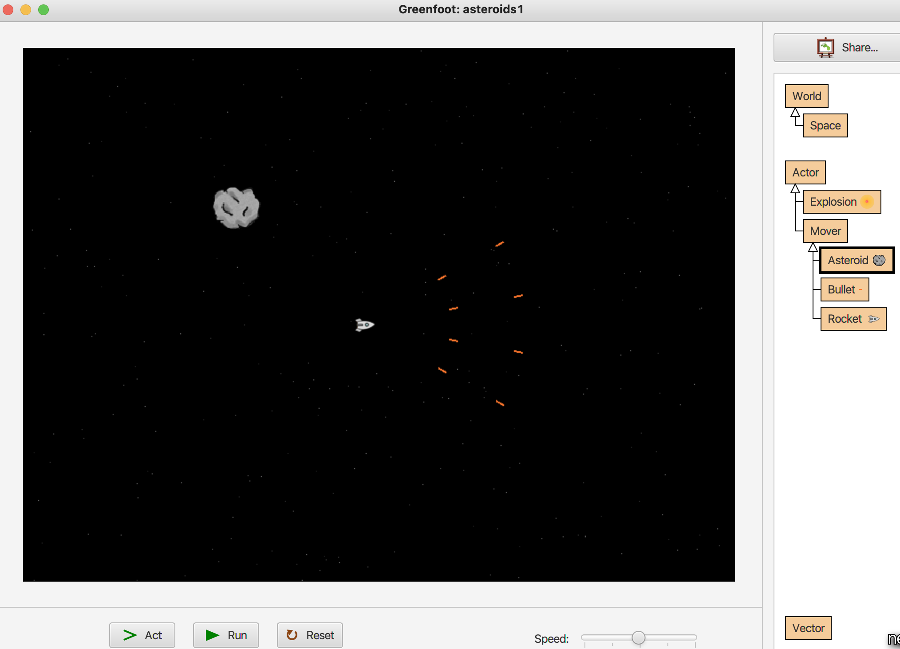

<ul> patri pouze <li> tagy id="attname" je mozne v CSS adresovat pomoci #attname .classnametext-decoration: none; border-radius: 4px;width: 90%;margin: 20px autoprvek:hover { ... }Tak jsem dnes úspěšně dostal svou první stránku na internet a může jí teď vidět celý svět! Trvalo mi to poměrně dlouho, protože jsem si nechtěl tvořit svou první stránku pomocí nějakého vizuálního editoru, ale chtěl jsem si tam do světa hezky nahrát svůj vlastní html kód, který jsem se naučil. Mám teď dobrý pocit, že si mohu takto na internetu vést třeba zápisník a každý den si tam psát něco nového. Nějaké myšlenky, které mě zrovna inspirují. Moc rád bych se naučil dále tvořit nějaké interaktivní stránky, kde budu moci udělat, aby si uživatel poklikal nějaké ikonky a něco to bude hezkého dělat nebo zahrál nějakou minihru. Nebo by třeba ta moje stránka mohla obsahovat nějaké interaktivní matematické aplikace.
Dnes byl krásný den! Úspěšně jsem se infiltroval na dvě přednášky na FITu, kde to mají už trochu více hlídané, než na Matfyzu. První přednášku měla taková starší paní o historii počítání například v Mayských civilizacích nebo v řecku či středověkkém území Čech. Také nám ukazovala, jak funguje tzv. Pickův vzorec na výpočet obsahu 2D objektů na mřížce.
V mezičase jsem si počítal příklady ze SCIO testů a moc mě to bavilo! Hlavně mi dělalo radost, že se mi povedlo odvodit si pár vzorečků, které už se mi za dobu jejich neužívání vykouřilo z hlavy. Také jsem vymyslel způsob, jak zkracovat faktoriály s neznámou ve tvaru !(x-a)/!(x-b). Je to krásně elegantní. Stejně tak, jako důkaz vzorce sin2x = 2sinxcosx pomocí komplexních čísel. Pro ten je ale nutné znát, že násobit dvě komplexní čísla se dá představit také tak, že vynásobíme jejich absolutní hodnoty a sečteme jejich úhly.
Na druhé přednášce, která se týkala toku v sítích jsem si uvědomil, jak moc jsem šťastný, že jsem nezůstal ve Skotsku na VŠ. Vždyť tady na Matfyzu i ČVUT je ta výuka o tolik kvalitnější! Už se nemůžu dočkat, až budu zase řádný student.
Dnes jsem konečně doučoval matematiku holčinu z 9. třídy a pomáhal jí se připravit na přijímačky. Mám z toho zajímavý pocit, protože už mi tolik věcí příjde očividné a je těžké to vysvětlovat i když to vše chápu. Prostě už si nedokážu představit, jak to nemůže být do očí bijící, že obsah obdelníku je strana a krát strana b. To mi příjde úplně triviální, ale ta holčina to ještě nemá zažité. Snažím se jí to vše ukazovat názorně, aby to nebrala jako vzorce a magii, ale aby věděla, proč to tak funguje. Také bych byl rád, kdyby pochopila rovnice.
Před odchodem mi řekla, že má ráda minecraft, tak jsem pak celou cestu zpět a ještě doma přemýšlel, jaké by se daly vymyslet úlohy s minecraftovou tématikou, které nejsou úplně nudné a na pár jsem jich přišel. Jenom vůbec nemám odhad zatím na to, co je moc lehké a co moc těžké. Rád bych s ní ty čtyři úlohy co jsem vytvořil pak prošel v úterý. Dokonce jsem si stáhl minecraft, abych se inspiroval a některé své výpočty ověřil.
Je to tady zas. Povedlo se mi najít si další webhosting, kam mohu jednoduše uploadovat svůj html soubor a nemusím používat nějaký vizuální editor pro úpravu své stránky. Všechno hezky po staru bez tahání. Jen kód. Tak uvidíme, jestli mě to zase namotivuje k učení se jazyka html a tvorby webových stránek.
Dnes byl poměrně pěkný den. Dopoledne jsem byl nakupovat s tátou v Makru a potom jsme s Davidem plánovali náš výlet do Bosny a Herzegoviny a do Černé Hory. David je šikula a hodně toho naplánoval už sám, takže už bylo potřeba to jen drobně doladit.
Zajímavé však bylo hlavně to, že jsem se domlouval s Jirkou, že dnes odpoledne půjdeme běhat a to nám nakonec nevyšlo. Jirku totiž pozval na poslední chvíli Adam na pivko, a tak to Jirka už nestíhal. Šel jsem si tedy zaběhat sám a najednou když jsem se vracel, tak jsem v podchodu spatřil Jirku, jak mi běží naproti. No tak jsem se otočil a běžel jsem s Jirkou druhé kolo. No a na závěr ještě sprint na 100 metrů.
K večeři jsme si s tátou dali toustíky z nového toustovače. Samozřejmě vyhrály ty nivové s rajčátky. Chtěli jsme si pak pustit nějaký film a já jsem vykoumal, že v roce 2017 byl vytvořen film s názvem The Farthest, který dokumentuje misi Voyager. Film nás velmi mile překvapil svými úžasnými záběry. Něco byly samozřejmě ilustrační fotografie, avšak velkou roli hráli také fotografie přímo z Voyageru, jak je fotil v nadcházejících letech po startu v roce 1977.
Tak jsem se konečně pořádně opřel do tvorby agendy na mé lekce kroužku programování, který povedu pro děti v újezdském DDM. Sepisuji si jednotlivé pojmy, které chci vysvětlit. Úkoly, které jim zadám. Otázky, na které se jich budu ptát, a také co přesně chci vložit do pracovního listu. Ten je totiž moc důležitý, aby si mohli doma opakovat, co se již naučili a můžu jim tak zadávat i domácí úkoly.
Zavítal jsem také do Mostu k příležitosti slavnostního předávání mého bytu. Nový nájemník je dobrej potetovanec. Cestou zpět jsem se stavil na hradě Hazmburk, který byl však zavřený. Fajne jsem ale procvičil němčinu při čtení informační tabule a poklábosil s holčinama. Udělal jsem si také nice photos.
Bylo na čase zase navštívit babi a dědu ve Štarnově a udělat jim radost a dozvědět se, co tu je nového. Jsem tu vždy rád a pokud můžu ještě nařezat polínka a naštípat dřevo, tak tím lépe. Zároveň miluji tu střídmost a režim nepřejídání se, který tu děda disciplinovaně drží. To mi velice vyhovuje a za nic bych neměnil. S babi jsem si zahrál labyrint a krycí jména a teď se ještě na chvilku vrhnu na tvorbu agendy a úkolů, které budu dávat děckám v Greenfootu. Je to zajímavá kreativní činnost a samotného mě baví se učit nové věci a tvořit hry a poznávat, co vše dokáži naprogramovat zajímavého.
Druhý den u babi jsme sekali zahrádku. Děda uvařil supr dýňové hranolky, na které jsme si dávali česnek a mohl jsem se po tom utlouci. No a pak ještě na závěr ovocné knedlíky. No a pak ještě na závěr závěr kafčo s buchtou. No a pak zmrzlina ve Štarnově.

Supr zpráva: Už jsem dokončil svůj první předběžný pracovní list na můj programovací kroužek. Vím samozřejmě, že má ještě mnoho much a že může být pro děti příliš těžký nebo nudný. Hlavně už ale mám v hlavně srovnané, co vše musím děcka postupně naučit a jak to vysvětlit. Také se hodí, že už mám dost různých příkladů toho, co se dá naprogramovat. Můžu jim tak dávat různé více či méně složité úkoly k vyřešení.